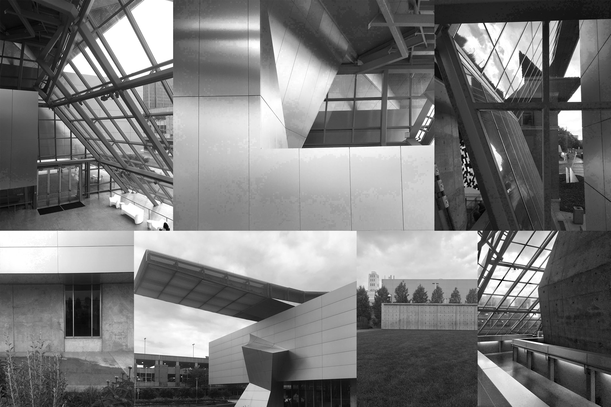

Blog
Akron Art Museum
June 17, 2019
by Benjamin Boczulak

I recently paid a visit to the Akron Art Museum in Akron, Ohio. The trip was mainly to visit the iconic Coop Himmelb(l)au designed 2007 addition. Coop Himmelb(l)au is most known for their work on BMW Welt and Falkestrasse rooftop remodel. The style of most of Coop Himmelb(l)au’s buildings follows Deconstructivism which embraces fragmentation and rejects continuity or symmetry. Architects such as Frank Gehry and the late Zaha Hadid have participated in the Deconstruction movement. According to Coop Himmelb(l)au, the building is split in “3 parts: the Crystal, the Gallery Box, and the Roof Cloud.”
The Crystal is the 3 story lobby that welcomes visitors and connects all of the spaces, including the existing 1899 building that originally was the Akron Post Office.
The Gallery Box is the exhibition space which is accessible on the south side of the Crystal. This is where the majority of the exhibits live.
The Roof Cloud is a large cantilevered mass that “hovers above the building” and creates a landmark in the city.
The collage above is the documentation of my experience in the space. The use of concrete, glass and metal are a sight to behold. The space seems so chaotic but has an underlying geometry and harmony that is unexplainable. While in the Crystal, I just wanted to stare at all of the glass and metal framework that surrounded me. It is an incredible space; I recommend that all should visit if they are in the area.
The museum itself is very interesting too. It is very quaint and certainly much smaller than the nearby Cleveland Museum of Art, but the Akron Art Museum’s collection is almost entirely made up of pieces from local artists to Northeast Ohio. This is work that is unavailable anywhere else. Also, the museum is free on Thursdays so plan your visit around that if you wish to save a few bucks.
Location from Google Maps: